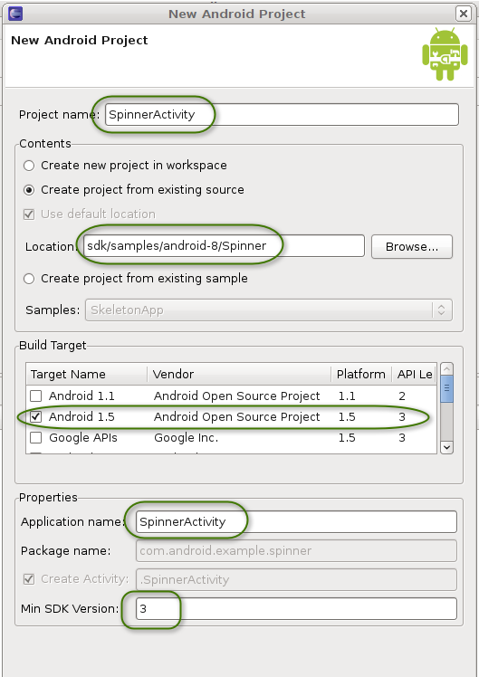
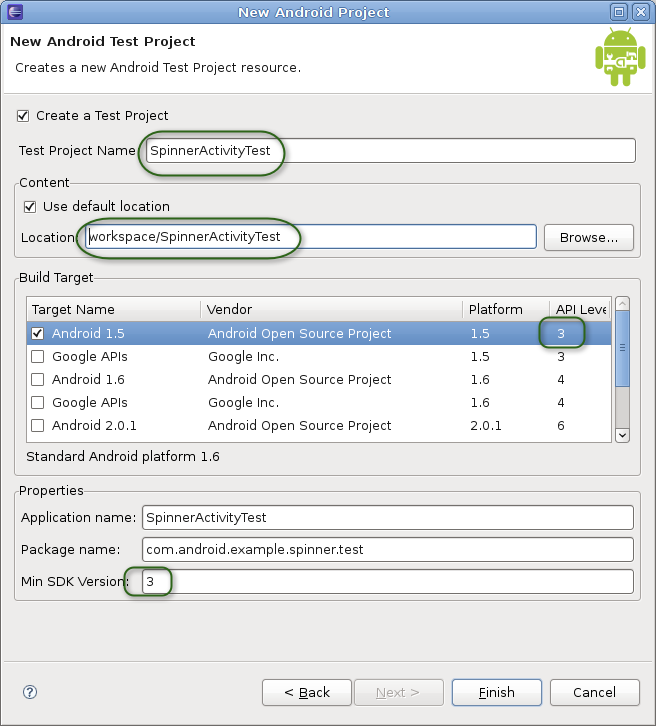
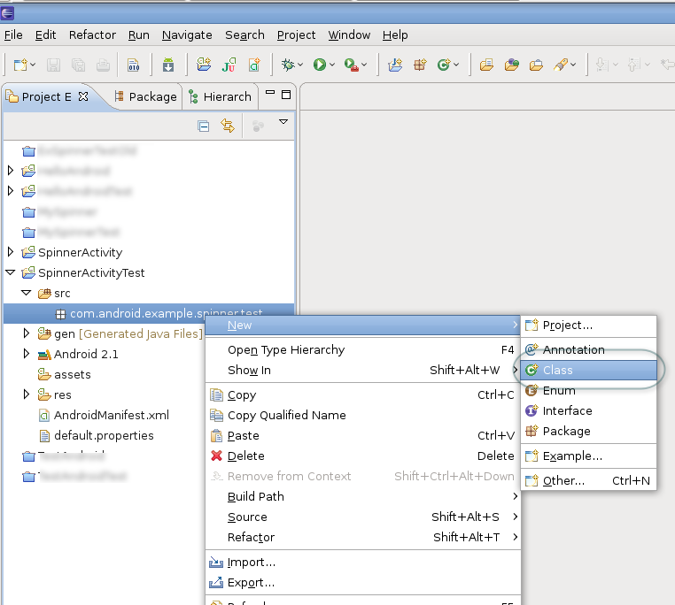
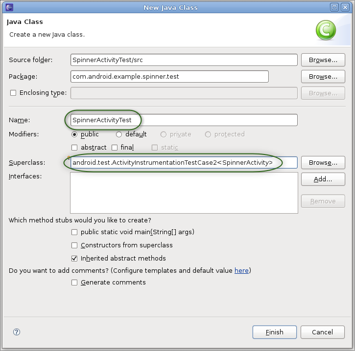
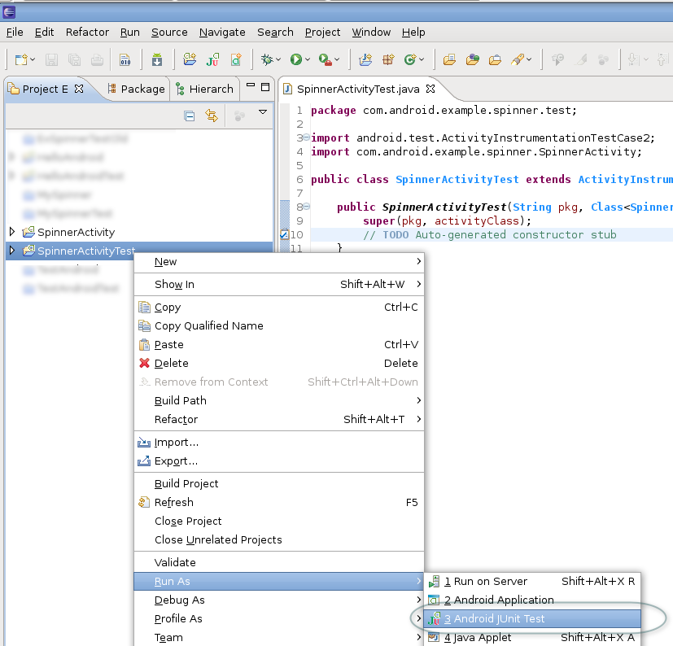
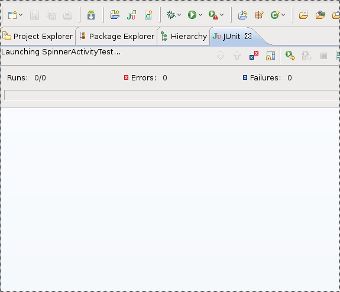
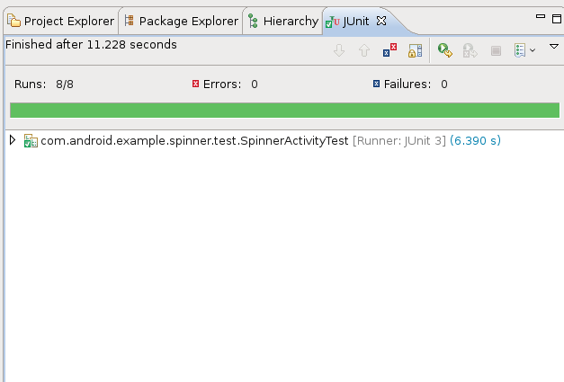
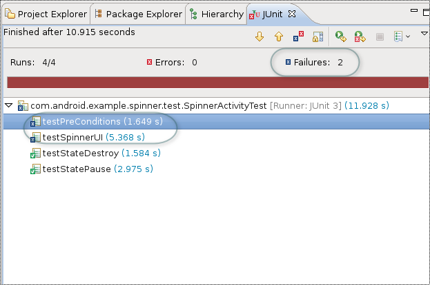
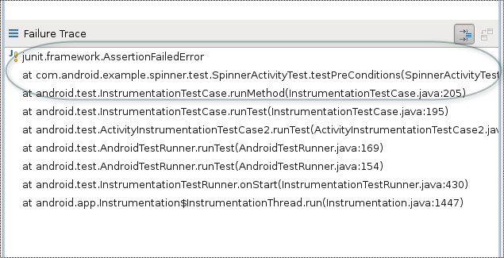

Android includes powerful tools for testing applications. The tools extend JUnit with additional features, provide convenience classes for mock Android system objects, and use instrumentation to give you control over your main application while you are testing it. The entire Android testing environment is discussed in the document Testing Fundamentals.
This tutorial demonstrates the Android testing tools by presenting a simple Android application and then leading you step-by-step through the creation of a test application for it. The test application demonstrates these key points:
-
An Android test is itself an Android application that is linked to the application under test by entries in its
AndroidManifest.xmlfile. - Instead of Android components, an Android test application contains one or more test cases. Each of these is a separate class definition.
-
Android test case classes extend the JUnit
TestCaseclass. - Android test case classes for activities extend JUnit and also connect you to the application under test with instrumentation. You can send keystroke or touch events directly to the UI.
- You choose an Android test case class based on the type of component (application, activity, content provider, or service) you are testing.
- Additional test tools in Eclipse/ADT provide integrated support for creating test applications, running them, and viewing the results.
The test application contains methods that perform the following tests:
-
Initial conditions test. Tests that the application under test initializes correctly. This is also a unit test of the application's
onCreate()method. Testing initial conditions also provides a confidence measure for subsequent tests. - UI test. Tests that the main UI operation works correctly. This test demonstrates the instrumentation features available in activity testing. It shows that you can automate UI tests by sending key events from the test application to the main application.
- State management tests. Test the application's code for saving state. This test demonstrates the instrumentation features of the test runner, which are available for testing any component.
Prerequisites
The instructions and code in this tutorial depend on the following:
- Basic knowledge of Android programming. If you haven't yet written an Android application, do the class Building Your First App. If you want to learn more about Spinner, the application under test, then you might want to review the "Spinner" sample app.
- Some familiarity with the Android testing framework and concepts. If you haven't explored Android testing yet, start by reading the Testing Fundamentals guide.
- Eclipse with ADT. This tutorial describes how to set up and run a test application using Eclipse with ADT. If you haven't yet installed Eclipse and the ADT plugin, follow the steps in Installing the SDK to install them before continuing. If you are not developing in Eclipse, you will find instructions for setting up and running the test application in the appendix of this document.
Installing the Tutorial Sample Code
During this tutorial, you will be working with sample code that is provided as part of the downloadable Samples component of the SDK. Specifically, you will be working with a pair of related sample applications — an application under test and a test application:
- Spinner is the application under test. This tutorial focuses on the common situation of writing tests for an application that already exists, so the main application is provided to you.
- SpinnerTest is the test application. In the tutorial, you create this application step-by-step. If you want to run quickly through the tutorial, you can install the completed SpinnerTest application first, and then follow the text. You may get more from the tutorial, however, if you create the test application as you go. The instructions for installing the completed test application are in the section Installing the Completed Test Application File.
The sample applications are described in more detail in the Samples topic. Follow the instructions to download the version of the samples that's appropriate for the platform you're working with.
Setting Up the Emulator
In this tutorial, you will use the Android emulator to run applications. The emulator needs an Android Virtual Device (AVD) with an API level equal to or higher than the one you set for the projects in the previous step. To find out how to check this and create the right AVD if necessary, see Creating an AVD.
As a test of the AVD and emulator, run the SpinnerActivity application in Eclipse with ADT. When it starts, click the large downward-pointing arrow to the right of the spinner text. You see the spinner expand and display the title "Select a planet" at the top. Click one of the other planets. The spinner closes, and your selection appears below it on the screen.
Setting Up the Projects
When you are ready to get started with the tutorial, begin by setting up Eclipse projects for both Spinner (the application under test) and SpinnerTest (the test application).
You'll be using the Spinner application as-is, without modification, so you'll be loading it into Eclipse as a new Android project from existing source. In the process, you'll be creating a new test project associated with Spinner that will contain the SpinnerTest application. The SpinnerTest application will be completely new and you'll be using the code examples in this tutorial to add test classes and tests to it.
To install the Spinner app in a new Android project from existing source, following these steps:
- In Eclipse, select File > New > Project > Android > Android Project, then click Next. The New Android Project dialog appears.
- In the Project name text box, enter "SpinnerActivity". The Properties area is filled in automatically.
- In the Contents area, set "Create project from existing source".
-
For Location, click Browse, navigate to the directory
<SDK_path>/samples/android-8/Spinner, then click Open. The directory name<SDK_path>/samples/android-8/Spinnernow appears in the Location text box. - In the Build Target area, set a API level of 3 or higher. If you are already developing with a particular target, and it is API level 3 or higher, then use that target.
- In the Properties area, in the Min SDK Version:, enter "3".
-
You should now see these values:
- Project Name: "SpinnerActivity"
- Create project from existing source: set
- Location: "
<SDK_path>/samples/android-8/Spinner" - Build Target: "API level of 3 or higher" (Target Name "Android 1.5 or higher")
- Package name: (disabled, set to "
com.android.example.spinner") - Create Activity: (disabled, set to ".SpinnerActivity")
- Min SDK Version: "3"
The following screenshot summarizes these values:

{kind=link}
To create a new test project for the SpinnerTest application, follow these steps:
- Click Next. The New Android Test Project dialog appears.
- Set "Create a Test Project".
-
Leave the other values unchanged. The result should be:
- Create a Test Project: checked
- Test Project Name: "SpinnerActivityTest"
- Use default location: checked (this should contain the directory name "
workspace/SpinnerActivityTest"). - Build Target: Use the same API level you used in the previous step.
- Application name: "SpinnerActivityTest"
- Package name: "
com.android.example.spinner.test" - Min SDK Version: "3"
The following screenshot summarizes these values:
 -
Click Finish. Entries for SpinnerActivity and SpinnerActivityTest should appear in the
Package Explorer.
Note: If you set Build Target to an API level higher than "3", you will see the warning "The API level for the selected SDK target does not match the Min SDK version". You do not need to change the API level or the Min SDK version. The message tells you that you are building the projects with one particular API level, but specifying that a lower API level is required. This may occur if you have chosen not to install the optional earlier API levels.
If you see errors listed in the Problems pane at the bottom of the Eclipse window, or if a red error marker appears next to the entry for SpinnerActivity in the Package Explorer, highlight the SpinnerActivity entry and then select Project > Clean. This should fix any errors.
{kind=link}
You now have the application under test in the SpinnerActivity project, and an empty test project in SpinnerActivityTest. You may notice that the two projects are in different directories, but Eclipse with ADT handles this automatically. You should have no problem in either building or running them.
Notice that Eclipse and ADT have already done some initial setup for your test application.
Expand the SpinnerActivityTest project, and notice that it already has an
Android manifest file AndroidManifest.xml.
Eclipse with ADT created this when you added the test project.
Also, the test application is already set up to use instrumentation. You can see this
by examining AndroidManifest.xml.
Open it, then at the bottom of the center pane click AndroidManifest.xml
to display the XML contents:
<?xml version="1.0" encoding="utf-8"?>
<manifest xmlns:android="http://schemas.android.com/apk/res/android"
package="com.android.example.spinner.test"
android:versionCode="1"
android:versionName="1.0">
<uses-sdk android:minSdkVersion="3" />
<instrumentation
android:targetPackage="com.android.example.spinner"
android:name="android.test.InstrumentationTestRunner" />
<application android:icon="@drawable/icon" android:label="@string/app_name">
<uses-library android:name="android.test.runner" />
...
</application>
</manifest>
Notice the <instrumentation> element. The attribute
android:targetPackage="com.android.example.spinner" tells Android that the
application under test is defined in the Android package
com.android.example.spinner. Android now knows to use that
package's AndroidManifest.xml file to launch the application under test.
The <instrumentation> element also contains the attribute
android:name="android.test.InstrumentationTestRunner", which tells Android
instrumentation to run the test application with Android's instrumentation-enabled test runner.
Creating the Test Case Class
You now have a test project SpinnerActivityTest, and the basic structure of a test application also called SpinnerActivityTest. The basic structure includes all the files and directories you need to build and run a test application, except for the class that contains your tests (the test case class).
The next step is to define the test case class. In this tutorial, you'll be creating a test case class that includes:
-
Test setup. This use of the JUnit
setUp()method demonstrates some of the tasks you might perform before running an Android test. -
Testing initial conditions. This test demonstrates a good testing technique.
It also demonstrates that with Android instrumentation you can look at the application
under test before the main activity starts. The test checks that the application's
important objects have been initialized.
If the test fails, you then know that any other tests against the application are
unreliable, since the application was running in an incorrect state.
Note: The purpose of testing initial conditions is not the same as using
setUp(). The JUnitsetUp()runs once before each test method, and its purpose is to create a clean test environment. The initial conditions test runs once, and its purpose is to verify that the application under test is ready to be tested. - Testing the UI. This test shows how to control the main application's UI with instrumentation, a powerful automation feature of Android testing.
-
Testing state management. This test shows some techniques for testing how
well the application maintains state in the Android environment. Remember that to
provide a satisfactory user experience, your application must never lose its current state,
even if it's interrupted by a phone call or destroyed because of memory constraints.
The Android activity lifecycle provides ways to maintain state, and the
SpinnerActivityapplication uses them. The test shows the techniques for verifying that they work.
Android tests are contained in a special type of Android application that contains one or more test class definitions. Each of these contains one or more test methods that do the actual tests. In this tutorial, you will first add a test case class, and then add tests to it.
You first choose an Android test case class to extend. You choose from the base test case classes according to the Android component you are testing and the types of tests you are doing.
In this tutorial, the application under test has a single simple activity, so the test case class will be for an Activity component. Android offers several, but the one that tests in
the most realistic environment is ActivityInstrumentationTestCase2, so you will use it as the base class. Like all activity test case classes,
ActivityInstrumentationTestCase2 offers convenience methods for interacting directly with the UI of the application under test.
Adding the test case class file
To add ActivityInstrumentationTestCase2 as the base test case class, follow these steps:
- In the Package Explorer, expand the test project SpinnerActivityTest if it is not open already.
-
Within SpinnerActivityTest, expand the
src/folder and then the package marker forcom.android.example.spinner.test. Right-click on the package name and select New > Class:
The New Java Class wizard appears:
 -
In the wizard, enter the following:
- Name: "SpinnerActivityTest". This becomes the name of your test class.
-
Superclass: "
android.test.ActivityInstrumentationTestCase2<SpinnerActivity>". The superclass is parameterized, so you have to provide it your main application's class name.
Do not change any of the other settings. Click Finish.
-
You now have a new file
SpinnerActivityTest.javain the project. -
To resolve the reference to SpinnerActivity, add the following import:
import com.android.example.spinner.SpinnerActivity;
{kind=link}
{kind=link}
Adding the test case constructor
To ensure that the test application is instantiated correctly, you must set up a constructor that the test runner will call when it instantiates your test class. This constructor has no parameters, and its sole purpose is to pass information to the superclass's default constructor. To set up this constructor, enter the following code in the class:
public SpinnerActivityTest() {
super("com.android.example.spinner", SpinnerActivity.class);
} // end of SpinnerActivityTest constructor definition
This calls the superclass constructor with the Android package name (com.android.example.spinner)and main activity's class
(SpinnerActivity.class) for the application under test. Android uses this information to find the application and activity to test.
You are now ready to add tests, by adding test methods to the class.
Adding the setup method
The setUp() method is invoked before every test. You use it to initialize variables and clean up from previous tests. You can also use
the JUnit tearDown() method, which runs after every test method. The tutorial does not use it.
The method you are going to add does the following:
-
super.setUp(). Invokes the superclass constructor forsetUp(), which is required by JUnit. -
Calls
setActivityInitialTouchMode(false). This turns off touch mode in the device or emulator. If any of your test methods send key events to the application, you must turn off touch mode before you start any activities; otherwise, the call is ignored. -
Stores references to system objects. Retrieves and stores a reference to the activity under test, the
Spinnerwidget used by the activity, theSpinnerAdapterthat backs the widget, and the string value of the selection that is set when the application is first installed. These objects are used in the state management test. The methods invoked are:-
getActivity(). Gets a reference to the activity under test (SpinnerActivity). This call also starts the activity if it is not already running. -
findViewById(int). Gets a reference to theSpinnerwidget of the application under test. -
getAdapter(). Gets a reference to the adapter (an array of strings) backing the spinner.
-
Add this code to the definition of SpinnerActivityTest, after the constructor definition:
@Override
protected void setUp() throws Exception {
super.setUp();
setActivityInitialTouchMode(false);
mActivity = getActivity();
mSpinner =
(Spinner) mActivity.findViewById(
com.android.example.spinner.R.id.Spinner01
);
mPlanetData = mSpinner.getAdapter();
} // end of setUp() method definition
Add these members to the test case class:
private SpinnerActivity mActivity; private Spinner mSpinner; private SpinnerAdapter mPlanetData;
Add these imports:
import android.widget.Spinner; import android.widget.SpinnerAdapter;
You now have the complete setUp() method.
Adding an initial conditions test
The initial conditions test verifies that the application under test is initialized correctly. It is an illustration of the types of tests you can run, so it is not comprehensive. It verifies the following:
- The item select listener is initialized. This listener is called when a selection is made from the spinner.
- The adapter that provides values to the spinner is initialized.
- The adapter contains the right number of entries.
The actual initialization of the application under test is done in setUp(), which the test runner calls automatically before every test. The verifications are
done with JUnit Assert calls. As a useful convention, the method name is testPreConditions():
public void testPreConditions() {
assertTrue(mSpinner.getOnItemSelectedListener() != null);
assertTrue(mPlanetData != null);
assertEquals(mPlanetData.getCount(),ADAPTER_COUNT);
} // end of testPreConditions() method definition
Add this member:
public static final int ADAPTER_COUNT = 9;
Adding a UI test
Now create a UI test that selects an item from the Spinner widget. The test sends key events to the UI with key events.
The test confirms that the selection matches the result you expect.
This test demonstrates the power of using instrumentation in Android testing. Only an instrumentation-based test class allows you to send key events (or touch events) to the application under test. With instrumentation, you can test your UI without having to take screenshots, record the screen, or do human-controlled testing.
To work with the spinner, the test has to request focus for it and then set it to a known position. The test uses requestFocus() and
setSelection() to do this. Both of these methods interact with a View in the application under test, so you have to call them
in a special way.
Code in a test application that interacts with a View of the application under test must run in the main application's thread, also
known as the UI thread. To do this, you use the Activity.runOnUiThread()
method. You pass the code to runOnUiThread()in an anonymous Runnable object. To set
the statements in the Runnable object, you override the object's run() method.
To send key events to the UI of the application under test, you use the sendKeys() method. This method does not have to run on the UI thread, since Android uses instrumentation to pass the key events to the application under test.
The last part of the test compares the selection made by sending the key events to a pre-determined value. This tests that the spinner is working as intended.
The following sections show you how to add the code for this test.
-
Get focus and set selection. Create a new method
public void testSpinnerUI(). Add code to to request focus for the spinner and set its position to default or initial position, "Earth". This code is run on the UI thread of the application under test:public void testSpinnerUI() { mActivity.runOnUiThread( new Runnable() { public void run() { mSpinner.requestFocus(); mSpinner.setSelection(INITIAL_POSITION); } // end of run() method definition } // end of anonymous Runnable object instantiation ); // end of invocation of runOnUiThreadAdd the following member to the test case class.
public static final int INITIAL_POSITION = 0;
-
Make a selection. Send key events to the spinner to select one of the items. To do this, open the spinner by
"clicking" the center keypad button (sending a DPAD_CENTER key event) and then clicking (sending) the down arrow keypad button five times. Finally,
click the center keypad button again to highlight the desired item. Add the following code:
this.sendKeys(KeyEvent.KEYCODE_DPAD_CENTER); for (int i = 1; i <= TEST_POSITION; i++) { this.sendKeys(KeyEvent.KEYCODE_DPAD_DOWN); } // end of for loop this.sendKeys(KeyEvent.KEYCODE_DPAD_CENTER);Add the following member to the test case class:
public static final int TEST_POSITION = 5;
This sets the final position of the spinner to "Saturn" (the spinner's backing adapter is 0-based).
-
Check the result. Query the current state of the spinner, and compare its current selection to the expected value.
Call the method
getSelectedItemPosition()to find out the current selection position, and thengetItemAtPosition()to get the object corresponding to that position (casting it to a String). Assert that this string value matches the expected value of "Saturn":mPos = mSpinner.getSelectedItemPosition(); mSelection = (String)mSpinner.getItemAtPosition(mPos); TextView resultView = (TextView) mActivity.findViewById( com.android.example.spinner.R.id.SpinnerResult ); String resultText = (String) resultView.getText(); assertEquals(resultText,mSelection); } // end of testSpinnerUI() method definitionAdd the following members to the test case class:
private String mSelection; private int mPos;
Add the following imports to the test case class:
import android.view.KeyEvent; import android.widget.TextView;
Pause here to run the tests you have. The procedure for running a test application is different from running a regular Android application. You run a test application as an Android JUnit application. To see how to do this, see Running the Tests and Seeing the Results.
Eventually, you will see the SpinnerActivity application start, and the test
application controlling it by sending it key events. You will also see a new
JUnit view in the Explorer pane, showing the results of the
test. The JUnit view is documented in a following section,
Running the Test and Seeing the Results.
Adding state management tests
You now write two tests that verify that SpinnerActivity maintains its state when it is paused or terminated. The state, in this case, is the current selection in the spinner. When users make a selection, pause or terminate the application, and then resume or restart it, they should see the same selection.
Maintaining state is an important feature of an application. Users may switch from the current application temporarily to answer the phone, and then switch back. Android may decide to terminate and restart an activity to change the screen orientation, or terminate an unused activity to regain storage. In each case, users are best served by having the UI return to its previous state (except where the logic of the application dictates otherwise).
SpinnerActivity manages its state in these ways:
- Activity is hidden. When the spinner screen (the activity) is running but hidden by some other screen, it stores the spinner's position and value in a form that persists while the application is running.
- Application is terminated. When the activity is terminated, it stores the spinner's position and value in a permanent form. The activity can read the position and value when it restarts, and restore the spinner to its previous state.
- Activity re-appears. When the user returns to the spinner screen, the previous selection is restored.
- Application is restarted. When the user starts the application again, the previous selection is restored.
Note: An application can manage its state in other ways as well, but these are not covered in this tutorial.
When an activity is hidden, it is paused. When it re-appears, it
resumes. Recognizing that these are key points in an activity's life cycle,
the Activity class provides two callback methods onPause() and
onResume() for handling pauses and resumes.
SpinnerActivity uses them for code that saves and restores state.
Note: If you would like to learn more about the difference between losing focus/pausing and killing an application, read about the activity lifecycle.
The first test verifies that the spinner selection is maintained after the entire application is shut down and then restarted. The test uses instrumentation to
set the spinner's variables outside of the UI. It then terminates the activity by calling Activity.finish(), and restarts it
using the instrumentation method getActivity(). The test then asserts that the current spinner state matches
the test values.
The second test verifies that the spinner selection is maintained after the activity is paused and then resumed. The test uses instrumentation to
set the spinner's variables outside of the UI and then force calls to the onPause() and onResume() methods. The test then
asserts that the current spinner state matches the test values.
Notice that these tests make limited assumptions about the mechanism by which the activity manages state. The tests use the activity's getters and
setters to control the spinner. The first test also knows that hiding an activity calls onPause(), and bringing it back to the foreground
calls onResume(). Other than this, the tests treat the activity as a "black box".
To add the code for testing state management across shutdown and restart, follow these steps:
-
Add the test method
testStateDestroy(), then set the spinner selection to a test value:public void testStateDestroy() { mActivity.setSpinnerPosition(TEST_STATE_DESTROY_POSITION); mActivity.setSpinnerSelection(TEST_STATE_DESTROY_SELECTION); -
Terminate the activity and restart it:
mActivity.finish(); mActivity = this.getActivity(); -
Get the current spinner settings from the activity:
int currentPosition = mActivity.getSpinnerPosition(); String currentSelection = mActivity.getSpinnerSelection(); -
Test the current settings against the test values:
assertEquals(TEST_STATE_DESTROY_POSITION, currentPosition); assertEquals(TEST_STATE_DESTROY_SELECTION, currentSelection); } // end of testStateDestroy() method definitionAdd the following members to the test case class:
public static final int TEST_STATE_DESTROY_POSITION = 2; public static final String TEST_STATE_DESTROY_SELECTION = "Earth";
To add the code for testing state management across a pause and resume, follow these steps:
-
Add the test method
testStatePause():@UiThreadTest public void testStatePause() {The
@UiThreadTestannotation tells Android to build this method so that it runs on the UI thread. This allows the method to change the state of the spinner widget in the application under test. This use of@UiThreadTestshows that, if necessary, you can run an entire method on the UI thread. -
Set up instrumentation. Get the instrumentation object
that is controlling the application under test. This is used later to
invoke the
onPause()andonResume()methods:Instrumentation mInstr = this.getInstrumentation(); -
Set the spinner selection to a test value:
mActivity.setSpinnerPosition(TEST_STATE_PAUSE_POSITION); mActivity.setSpinnerSelection(TEST_STATE_PAUSE_SELECTION); -
Use instrumentation to call the Activity's
onPause():mInstr.callActivityOnPause(mActivity);Under test, the activity is waiting for input. The invocation of
callActivityOnPause(android.app.Activity)performs a call directly to the activity'sonPause()instead of manipulating the activity's UI to force it into a paused state. -
Force the spinner to a different selection:
mActivity.setSpinnerPosition(0); mActivity.setSpinnerSelection("");This ensures that resuming the activity actually restores the spinner's state rather than simply leaving it as it was.
-
Use instrumentation to call the Activity's
onResume():mInstr.callActivityOnResume(mActivity);Invoking
callActivityOnResume(android.app.Activity)affects the activity in a way similar tocallActivityOnPause. The activity'sonResume()method is invoked instead of manipulating the activity's UI to force it to resume. -
Get the current state of the spinner:
int currentPosition = mActivity.getSpinnerPosition(); String currentSelection = mActivity.getSpinnerSelection(); -
Test the current spinner state against the test values:
assertEquals(TEST_STATE_PAUSE_POSITION,currentPosition); assertEquals(TEST_STATE_PAUSE_SELECTION,currentSelection); } // end of testStatePause() method definitionAdd the following members to the test case class:
public static final int TEST_STATE_PAUSE_POSITION = 4; public static final String TEST_STATE_PAUSE_SELECTION = "Jupiter";
-
Add the following imports:
import android.app.Instrumentation; import android.test.UiThreadTest;
Running the Tests and Seeing the Results
The most simple way to run the SpinnerActivityTest test case is to run it directly from the Package Explorer.
To run the SpinnerActivityTest test, follow these steps:
-
In the Package Explorer, right-click the project SpinnerActivityTest at the top level, and then
select Run As > Android JUnit Test:
 - You will see the emulator start. When the unlock option is displayed (its appearance depends on the API level you specified for the AVD), unlock the home screen.
-
The test application starts. You see a new tab for the JUnit view, next to the Package Explorer tab:

{kind=link}
{kind=link}
This view contains two sub-panes. The top pane summarizes the tests that were run, and the bottom pane shows failure traces for highlighted tests.
At the conclusion of a successful test run, this is the view's appearance:

{kind=link}
The upper pane summarizes the test:
- Total time elapsed for the test application(labeled Finished after <x> seconds).
- Number of runs (Runs:) - the number of tests in the entire test class.
- Number of errors (Errors:) - the number of program errors and exceptions encountered during the test run.
- Number of failures (Failures:) - the number of test failures encountered during the test run. This is the number of assertion failures. A test can fail even if the program does not encounter an error.
-
A progress bar. The progress bar extends from left to right as the tests run.
If all the tests succeed, the bar remains green. If a test fails, the bar turns from green to red.
- A test method summary. Below the bar, you see a line for each class in the test application. To look at the results for the individual methods in a test, click the arrow at the left to expand the line. You see the name of each test method. To the right of the name, you see the time taken by the test. You can look at the test's code by double-clicking its name.
The lower pane contains the failure trace. If all the tests are successful, this pane is empty. If some tests fail, then if you highlight a failed test in the upper pane, the lower view contains a stack trace for the test. This is demonstrated in the next section.
Note: If you run the test application and nothing seems to happen, look for the JUnit view. If you do not see it, you may have run the test application as a regular Android application. Remember that you need to run it as an Android JUnit application.
Forcing Some Tests to Fail
A test is as useful when it fails as when it succeeds. This section shows what happens in Eclipse with ADT when a test fails. You can quickly see that a test class has failed, find the method or methods that failed, and then use a failure trace to find the exact problem.
The example application SpinnerActivity that you downloaded passes all the tests in the test application SpinnerActivityTest.
To force the test to fail, you must modify the example application. You change a line of setup code in the application under test. This
causes the testPreConditions() and testTextView() test methods to fail.
To force the tests to fail, follow these steps:
-
In Eclipse with ADT, go to the SpinnerActivity project and open the file
SpinnerActivity.java. -
At the top of
SpinnerActivity.java, at the end of theonCreate()method, find the following line:// mySpinner.setOnItemSelectedListener(null);Remove the forward slash characters at the beginning of the line to uncomment the line. This sets the listener callback to null:
mySpinner.setOnItemSelectedListener(null); -
The
testPreConditions()method inSpinnerActivityTestcontains the following test:assertTrue(mSpinner.getOnItemSelectedListener() != null);. This test asserts that the listener callback is not null. Since you have modified the application under test, this assertion now fails. - Run the test, as described in the previous section Running the Tests and Seeing the Results.
The JUnit view is either created or updated with the results of the test. Now, however, the progress bar is red,
the number of failures is 2, and small "x" icons appear in the list icons next to the testPreConditions and
TestSpinnerUI tests. This indicates that the tests have failed. The display is similar to this:

{kind=link}
You now want to look at the failures to see exactly where they occurred.
To examine the failures, follow these steps:
-
Click the testPreconditions entry. In the lower pane entitled Failure Trace,
you see a stack trace of the calls that led to the failure. This trace is similar to the following screenshot:
 -
The first line of the trace tells you the error. In this case, a JUnit assertion failed. To look at the
assertion in the test code, double-click the next line (the first line of the trace). In the center pane
a new tabbed window opens, containing the code for the test application
SpinnerActivityTest. The failed assertion is highlighted in the middle of the window.
{kind=link}
The assertion failed because you modified the main application to set the getOnItemSelectedListener callback to null.
You can look at the failure in testTextView if you want. Remember, though, that testPreConditions is meant to verify the
initial setup of the application under test. If testPreConditions() fails, then succeeding tests can't be trusted. The best strategy to follow is to
fix the problem and re-run all the tests.
Remember to go back to SpinnerActivity.java and re-comment the line you uncommented in an earlier step.
You have now completed the tutorial.
Next Steps
This example test application has shown you how to create a test project and link it to the application you want to test, how to choose and add a test case class, how to write UI and state management tests, and how to run the tests against the application under test. Now that you are familiar with the basics of testing Android applications, here are some suggested next steps:
Learn more about testing on Android
- If you haven't done so already, read the Testing Fundamentals document in the Dev Guide. It provides an overview of how testing on Android works. If you are just getting started with Android testing, reading that document will help you understand the tools available to you, so that you can develop effective tests.
Review the main Android test case classes
Learn more about the assert and utility classes
-
Assert, the JUnit Assert class. -
MoreAsserts, additional Android assert methods. -
ViewAsserts, useful assertion methods for testing Views. -
TouchUtils, utility methods for simulating touch events in an Activity.
Learn about instrumentation and the instrumented test runner
-
Instrumentation, the base instrumentation class. -
InstrumentationTestCase, the base instrumentation test case. -
InstrumentationTestRunner, the standard Android test runner.
Appendix
Installing the Completed Test Application File
The recommended approach to this tutorial is to follow the instructions step-by-step and write the test code as you go. However, if you want to do this tutorial quickly, you can install the entire file for the test application into the test project.
To do this, you first create a test project with the necessary structure and files by using the automated tools in Eclipse. Then you exit Eclipse and copy the test application's file from the SpinnerTest sample project into your test project. The SpinnerTest sample project is part of the Samples component of the SDK.
The result is a complete test application, ready to run against the Spinner sample application.
To install the test application file, follow these steps:
- Set up the projects for the application under test and the test application, as described in the section section Setting Up the Projects.
- Set up the emulator, as described in the section Setting Up the Emulator.
- Add the test case class, as described in the section Adding the test case class file.
- Close Eclipse with ADT.
-
Copy the file
<SDK_path>/samples/android-8/SpinnerTest/src/com/android/example/spinner/test/SpinnerActivityTest.javato the directoryworkspace/SpinnerActivityTest/src/com/android/example/spinner/test/. - Restart Eclipse with ADT.
-
In Eclipse with ADT, re-build the project
SpinnerActivityTestby selecting it in the Package Explorer, right-clicking, and selecting Project > Clean. -
The complete, working test application should now be in the
SpinnerActivityTestproject.
You can now continue with the tutorial, starting at the section Adding the test case constructor and following along in the text.
For Users Not Developing In Eclipse
If you are not developing in Eclipse, you can still do this tutorial. Android provides tools for creating test applications using a code editor and command-line tools. You use the following tools:
- adb - Installs and uninstalls applications and test applications to a device or the emulator. You also use this tool to run the test application from the command line.
- android - Manages projects and test projects. This tool also manages AVDs and Android platforms.
You use the emulator tool to run the emulator from the command line.
Here are the general steps for doing this tutorial using an editor and the command line:
-
As described in the section Installing the Tutorial Sample Code, get the sample code. You will then
have a directory
<SDK_path>/samples/android-8, containing (among others) the directoriesSpinnerandSpinnerTest:-
Spinnercontains the main application, also known as the application under test. This tutorial focuses on the common situation of writing tests for an application that already exists, so the main application is provided to you. -
SpinnerTestcontains all the code for the test application. If you want to run quickly through the tutorial, you can install the test code and then follow the text. You may get more from the tutorial, however, if you write the code as you go. The instructions for installing the test code are in the section Appendix: Installing the Completed Test Application File.
-
-
Navigate to the directory
<SDK_path>/samples/android-8. -
Create a new Android application project using
android create project:$ android create project -t <APItarget> -k com.android.example.spinner -a SpinnerActivity -n SpinnerActivity -p Spinner
The value of
<APItarget>should be "3" (API level 3) or higher. If you are already developing with a particular API level, and it is higher than 3, then use that API level.This a new Android project
SpinnerActivityin the existingSpinnerdirectory. The existing source and resource files are not touched, but theandroidtool adds the necessary build files. -
Create a new Android test project using
android create test-project:$ android create test-project -m ../Spinner -n SpinnerActivityTest -p SpinnerActivityTest
This will create a new Android test project in the new directory
SpinnerActivityTest. You do this so that the solution to the tutorial that is inSpinnerTestis left untouched. If you want to use the solution code instead of entering it as you read through the tutorial, refer to the section Appendix: Installing the Completed Test Application File.Note: Running
android create test-projectwill automatically create the fileAndroidManifest.xmlwith the correct<instrumentation>element. -
Build the sample application. If you are building with Ant, then it is easiest to use the command
ant debugto build a debug version, since the SDK comes with a debug signing key. The result will be the fileSpinner/bin/SpinnerActivity-debug.apk. You can install this to your device or emulator. Attach your device or start the emulator if you haven't already, and run the command:$ adb install Spinner/bin/SpinnerActivity-debug.apk
-
To create the test application, create a file
SpinnerActivityTest.javain the directorySpinnerActivityTest/src/com/android/example/spinner/test/. - Follow the tutorial, starting with the section Creating the Test Case Class. When you are prompted to run the sample application, go to the Launcher screen in your device or emulator and select SpinnerActivity. When you are prompted to run the test application, return here to continue with the following instructions.
-
Build the test application. If you are building with Ant, then it is easiest to use the command
ant debugto build a debug version, since the SDK comes with a debug signing key. The result will be the Android fileSpinnerActivityTest/bin/SpinnerActivityTest-debug.apk. You can install this to your device or emulator. Attach your device or start the emulator if you haven't already, and run the command:$ adb install SpinnerActivityTest/bin/SpinnerActivityTest-debug.apk
-
In your device or emulator, check that both the main application
SpinnerActivityand the test applicationSpinnerActivityTestare installed. -
To run the test application, enter the following at the command line:
$ adb shell am instrument -w com.android.example.spinner.test/android.test.InstrumentationTestRunner
The result of a successful test looks like this:
com.android.example.spinner.test.SpinnerActivityTest:.... Test results for InstrumentationTestRunner=.... Time: 10.098 OK (4 tests)
If you force the test to fail, as described in the previous section Forcing Some Tests to Fail, then the output looks like this:
com.android.example.spinner.test.SpinnerActivityTest: Failure in testPreConditions: junit.framework.AssertionFailedError at com.android.example.spinner.test.SpinnerActivityTest.testPreConditions(SpinnerActivityTest.java:104) at java.lang.reflect.Method.invokeNative(Native Method) at android.test.InstrumentationTestCase.runMethod(InstrumentationTestCase.java:205) at android.test.InstrumentationTestCase.runTest(InstrumentationTestCase.java:195) at android.test.ActivityInstrumentationTestCase2.runTest(ActivityInstrumentationTestCase2.java:175) at android.test.AndroidTestRunner.runTest(AndroidTestRunner.java:169) at android.test.AndroidTestRunner.runTest(AndroidTestRunner.java:154) at android.test.InstrumentationTestRunner.onStart(InstrumentationTestRunner.java:430) at android.app.Instrumentation$InstrumentationThread.run(Instrumentation.java:1447) Failure in testSpinnerUI: junit.framework.ComparisonFailure: expected:<Result> but was:<Saturn> at com.android.example.spinner.test.SpinnerActivityTest.testSpinnerUI(SpinnerActivityTest.java:153) at java.lang.reflect.Method.invokeNative(Native Method) at android.test.InstrumentationTestCase.runMethod(InstrumentationTestCase.java:205) at android.test.InstrumentationTestCase.runTest(InstrumentationTestCase.java:195) at android.test.ActivityInstrumentationTestCase2.runTest(ActivityInstrumentationTestCase2.java:175) at android.test.AndroidTestRunner.runTest(AndroidTestRunner.java:169) at android.test.AndroidTestRunner.runTest(AndroidTestRunner.java:154) at android.test.InstrumentationTestRunner.onStart(InstrumentationTestRunner.java:430) at android.app.Instrumentation$InstrumentationThread.run(Instrumentation.java:1447) .. Test results for InstrumentationTestRunner=.F.F.. Time: 9.377 FAILURES!!! Tests run: 4, Failures: 2, Errors: 0